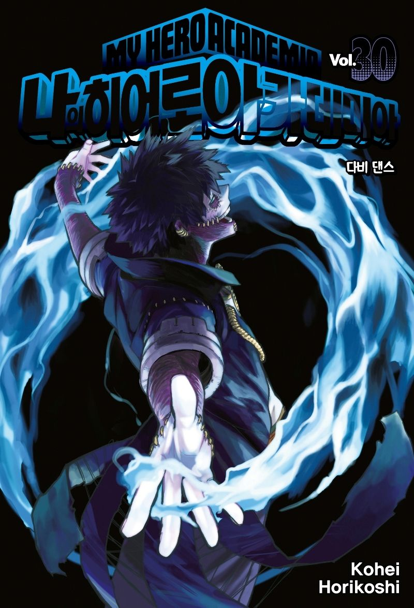

2015년 6월 30일 국내 정발. 번역자는 오경화. 일단 오경화 역자 특유의 비속어 또는 유행어 남발이나 무리한 의역은 찾기 힘들다. 단어만 내뱉은 대사에 멋대로 어미를 붙여버리는 등 대사의 뉘앙스를 전혀 신경 쓰지 않는 점이 호불호가 크게 갈린다. 그 외에도 고유명사를 굳이 직역해서 번역했다. 다만 해적판에서 웅영고, 사걸고 등으로 만들던 직역을 고유명사인 유에이, 시케츠 그대로 번역했다는 점은 다소 특이하다.
대원과 학산이라는 두 거인에게 항상 치여 사는 서울문화사에게 있어선 블리치 연재 종료 이후 정말 소중한 빅 타이틀이며, 매 권 발매될 때 마다 적 극적으로 마케팅을 한다. 단행본 초판 한정으로 캐릭터 카드를 주며, 가끔마다 초판 한정 한정판을 발행한다. 발매일도 최대한 빠르게 낼 수 있도록 노력하는 편이며, 25권은 심지어 한일 같은 달에 동시발매했다.
특이사항으로는 한국판 29권의 경우 책 뒤에 나오는 발행 일자로 보아 원래 30일 발매 예정이었으나 2주 정도 앞당겨 발행되었다.